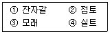
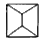
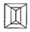
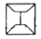
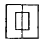
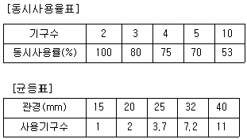
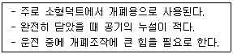
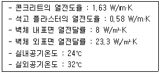
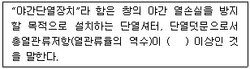

건축설비산업기사 (2010-05-09 기출문제)
1과목: 건축일반
1. 병동부의 간호단위 분류에 관한 설명 중 옳지 않은 것은?
- 통상적으로 전염병, 결핵, 정신병 분야는 종합병원에 포함시킨다.
- 성인과 어린이는 구분한다.
- 경미한 환자는 공동 병실에 집단 수용이 가능하다.
- 간호단위 분류체계는 간호의 종류, 간호의 요구 정도, 의료 장비의 요구도 등에 따라 구분된다.
(정답률: 75%)

2. 사무소 건물의 단면계획에 관한 사항으로 옳지 않은 것은?
- 1층의 층고는 기준층보다 높게 계획한다.
- 대규모 건물의 기계실 층고는 5 ~ 6.5m 정도로 한다.
- 최상층의 층고는 기준층과 같게 계획한다.
- 층고 결정시 덕트나 배관의 소요 스페이스를 고려한다.
(정답률: 77%)
3. 보기에서 흙의 입자를 큰 손으로 옳게 나열한 것은?

- ②-③-①-④
- ①-③-④-②
- ①-④-③-②
- ③-①-④-②
(정답률: 67%)
4. 다음 중 아파트 배치계획에서의 인동간격과 가장 거리가 먼 요소는?
- 일조
- 통풍
- 방화
- 단위세대의 면적
(정답률: 74%)
5. 다음 중 철골 용접접합부의 결함부위를 검사하는 비파괴검사 방법이 아닌 것은?
- 방사선투과검사
- 초음파탐상검사
- 개선정도검사
- 자기분말탐상검사
(정답률: 71%)
6. 다음 중 영식쌓기법에서 모서리 부분에 이오토막이나 반절을 사용하는 가장 주된 이유는?
- 모서리 부분의 통줄눈을 피하기 위하여
- 모서리 부분의 시공 편리성을 위하여
- 모서리 부분의 미적효과를 위해서
- 모서리 부분의 벽돌절감을 위해서
(정답률: 83%)
7. 공동주택의 단면 형식에 의한 분류에 속하지 않는 것은?
- 홀형
- 플랫형
- 스킵형
- 메조넷형
(정답률: 61%)
8. 창호의 종류에 따른 기호표시가 옳지 않은 것은?
- 강철제 창 :

- 목제 문 :

- 강철제 셔터 :

- 알루미늄합금제 창 :

(정답률: 78%)
9. 출입인원의 조절과 실내외의 공기유출의 방지효과를 목적으로 설치하는 문은?
- 셔터
- 회전문
- 망사문
- 자재문
(정답률: 88%)
10. 주택의 부엌 계획에 대한 설명으로 옳지 않은 것은?
- 다용도실과 인접하게 배치하면 좋다.
- 부엌의 삼각형은 총길이가 짧을수록 좋다.
- 소형 주택에서 부엌 가구의 배치는 ㄷ자형이 유리하다.
- 부엌의 삼각형은 냉장고, 싱크, 레인지의 3점을 잇는다.
(정답률: 70%)
11. 다음 중 전기 조명장치를 간접조명으로 하기에 가장 적합한 반자는?
- 층단 구성반자
- 종이반자
- 우물반자
- 널반자
(정답률: 63%)
12. 도서관의 어린이 열람실 계획에 관한 설명 중 옳지 않은 것은?
- 1층에 배치하고 출입구를 별도로 한다.
- 열람은 폐가식으로 운영하다.
- 실내구성은 각 연령층의 이용을 구분한다.
- 개가대출실과 독서실이 함께 구성되돌고 한다.
(정답률: 75%)
13. 종합병원의 건축군을 크게 3부분으로 구분할 때 이에 해당되지 않는 것은?
- 외래진료부
- 응급부
- 병동부
- 부속진료부
(정답률: 67%)
14. 목조 벽체를 구성하는 부재 중 기초 위에 가로놓아 상부에서 내려오는 하중을 기초에 전달하는 역할을 수행하는 것은?
- 토대
- 깔도리
- 층도리
- 가새
(정답률: 64%)
15. 다음 각 구조형식에 대한 설명으로 옳지 않은 것은?
- 철골철근콘크리트구조는 철골을 중심으로 그 주위를 철근으로 둘러싸는 구조이다.
- 트러스구조는 각 부재를 절점에서 연결해 삼각형으로 짜 맞춘 구조이다.
- 라멘구조에서 기둥과 보 접합부는 강접합으로 된다.
- 트러스구조의 각 부재에는 축방향력과 전단력, 휨이 발생한다.
(정답률: 46%)
16. 학교 운영방식에 관한 설명 중 옳지 않은 것은?
- 플래툰형은 교사의 수와 적당한 시설이 없어도 실시가 충분히 가능하다.
- 종합 교실형은 학생의 이동이 전혀 없고 초등학교 저학년에 적당하다.
- 교과 교실형은 각 교과 전문의 교실이 주어져, 시설의 질이 높아진다.
- 달톤형은 학급, 학생 구분을 없애고 학생들은 각자의 능력에 맞게 교과를 선택하는 방식이다.
(정답률: 72%)
17. 지붕 평면형태 중 합각지붕은 어느 것인가?




(정답률: 84%)
18. 도서관의 대지에 대한 설명 중 옳지 않은 것은?
- 지역사회의 중심적 이용에 편리할 것
- 재해방지의 사정이 좋을 것
- 아동부가 있을 때에는 그 입구의 교통이 복잡하지 않을 것
- 직사광서을 피할 수 있는 환경일 것
(정답률: 56%)
19. 사무소건축의 화장실 배치계획에 대한 설명 중 옳지 않은 것은?
- 각 층마다 공통의 위치에 둔다.
- 가능한 한 곳에 집중시킨다.
- 계단실이나 승강기실에서 멀리 떨어지도록 한다.
- 각 사무실에서 동선이 간단하도록 한다.
(정답률: 86%)
20. 다음 바닥구조 중 컴퓨터실 등 정보화 건물에 가장 적합한 것은?
- 엑세스플로어
- 전도바닥
- 방진바닥
- 뜬마루
(정답률: 82%)
2과목: 위생설비
21. 직접가열식 급탕방법에 대한 설명으로 옳지 않은 것은?
- 저탕조의 구조가 간단하다.
- 급탕온도가 고르지 않게 될 경우가 있다.
- 보일러 내부에 스케일이 발생하지 않는다.
- 저탕조와 보일러를 직결하여 순환가열하는 것이다.
(정답률: 70%)
22. 급탕배관에 대한 설명 중 옳지 않은 것은?
- 강제순환식 급탕배관의 구배는 최소 1/300 이상으로 한다.
- 가열에 따른 관의 신축을 흡수하기 위해서 팽창관을 설치한다.
- 관의 신축을 고려하여 배관의 굽힘부분에는 스위블 이음으로 접합한다.
- 상향배관인 경우, 급탕관은 상향구배, 반탕관은 하향구배로 한다.
(정답률: 57%)
23. 위생서비 유니트화의 효과에 대한 설명 중 옳지 않은 것은?
- 현장 작업량 감소
- 일정 수준의 품질 유지
- 현장 작업 스페이스의 증가
- 대량생산으로 인한 비용 절감
(정답률: 71%)
24. 배수배관에 통기관을 설치하는 목적과 가장 관계가 먼 것은?
- 배수의 흐름을 원활하게 한다.
- 관 내의 기압을 높여 악취를 배출한다.
- 사이펀작용, 흡출작용 등으로부터 봉수를 보호한다.
- 배수계통내의 공기의 흐름을 원활하게 한다.
(정답률: 76%)
25. 수도 직결급수에서 수도본관에서 1층 샤워기의 높이 2m, 마찰손실수두 20 kPa, 수도본관의 수압이 150 kPa 이라면 이 때 샤워기의 수압은?
- 70 kPa
- 110 kPa
- 130 kPa
- 190 kPa
(정답률: 53%)
26. 펌프의 유효흡입수두(NPSH) 산정의 직접적인 인자에 속하지 않는 것은?
- 흡입관내의 총손실 수두
- 흡수면에 작용하는 압력수두
- 흡입 실양정
- 흡입 및 토출 구경
(정답률: 57%)
27. 위생기구의 구비 조건으로 옳지 않은 것은?
- 내마모성이 작을 것
- 흡수성이 적을 것
- 제작이 용이할 것
- 설치가 용이할 것
(정답률: 47%)
28. 대변기의 세정수 급수방식에 따른 구분에 속하는 것은?
- 사이폰식
- 세락식
- 세정밸브식
- 블로우 아웃식
(정답률: 72%)
29. 옥외소화전설비의 호스접결구는 소방대상물의 각 부분으로부터 하나의 호스접결구까지의 수평거리가 최대 얼마 이하가 되도록 설치하여야 하는가?
- 40 m
- 50 m
- 60 m
- 70 m
(정답률: 69%)
30. 어느 배관에 접속관경이 15mm 인 위생기구 5개가 연결될 때, 이 배관의 관경으로 가장 적절한 것은?

- 20 mm
- 25 mm
- 32 mm
- 40 mm
(정답률: 59%)
31. 가스배관에 관한 설명 중 옳지 않은 것은?
- 건물 내에서는 미관을 고려하여 은폐 배관한다.
- 건물의 주요 구조부를 관통하지 않도록 한다.
- 배관 도중에 신축 흡수를 위한 이음을 한다.
- 배관 재료는 강관으로 나사 접합이 주로 사용된다.
(정답률: 77%)
32. BOD에 대한 설명으로 옳은 것은?
- 생물화학적 산소요구량을 말한다.
- 화학적 산소요구량을 말한다.
- 오수 중에 떠있는 부유물질을 말한다.
- 수중의 염소이온의 양을 말한다.
(정답률: 77%)
33. 다음의 통기배관에 대한 설명 중 옳지 않은 것은?
- 바닥 아래의 통기관은 가능한 금지해야 한다.
- 통기수직관과 우수수직관은 겸용해서는 안된다.
- 싱크대를 연합으로 2개 설치시 이중 트랩을 설치한다.
- 각개통기방식에서는 반드시 통기수직관을 설치한다.
(정답률: 69%)
34. 정화조 중 유입된 오수를 혐기성균에 의하여 소화작용으로 분리 침전이 이루어지도록 하는 곳은?
- 부패조
- 여과조
- 산화조
- 소독조
(정답률: 79%)
35. 배수트랩의 종류 중 사이폰 트랩에 해당하는 것은?
- U 트랩
- 드럼 트랩
- 벨 트랩
- 플로트 트랩
(정답률: 69%)
36. 급탕설비에 대한 설명 중 옳지 않은 것은?
- 급탕방식에는 국소식과 중앙식이 있다.
- 국소식 급탕방식에는 순간식, 저탕식, 기수혼합식이 있다.
- 급탕설비의 사용용도로는 난방용, 목욕용 등이 있다.
- 급탕설비의 배관방식에는 단관식과 복관식이 있다.
(정답률: 44%)
37. 급수방식 중 수도직결방식에 대한 설명으로 옳지 않은 것은?
- 정전으로 인한 단수의 염려가 없다.
- 고층으로의 급수가 어렵다.
- 위생성 측면에서 바람직한 방식이다.
- 급수압력이 일정하다.
(정답률: 80%)
38. 강관의 이음 방법 중 배관조립이나 관의 수리 등 관의 교체를 손쉽게 할 목적으로 사용되는 것은?
- 플랜지 이음
- 소켓 이음
- 슬리브 이음
- 스위블 이음
(정답률: 50%)
39. 다음 중 기구별 최저필요 급수압력이 가장 낮은 것은?
- 가스 순간탕비기
- 세정밸브식 대변기
- 샤워 헤드
- 일반수전
(정답률: 75%)
40. 10층의 건축물에서 옥내소화전의 설치개수가 각 층에 6개일 때 옥내소화전설비의 수원에 요구되는 저수량은 최소 얼마 이상이어야 하는가?
- 7m3
- 13m3
- 14m3
- 26m3
(정답률: 44%)
3과목: 공기조화설비
41. 건구온도 20℃, 절대습도 0.015 kg/kg 인 습공기의 엔탈피는? (단, 건공기의 정압비열 1.01 kJ/kg·K, 수증기의 정압 비열 1.85 kJ/kg·K, 0℃에서 포화수의 증발잠열 2501 kJ/kg)
- 23.15 kJ/kg
- 35.24 kJ/kg
- 42.36 kJ/kg
- 58.27 kJ/kg
(정답률: 35%)
42. 온수난방의 부속기기로 사용되는 팽창탱크에 대한 설명 중 옳지 않은 것은?
- 장치내의 온도변화에 따른 물의 체적변화를 흡수한다.
- 밀폐식 팽창탱크는 장치내의 주된 공기배출구로 이용되며, 온수보일러의 도피관으로도 사용된다.
- 팽창된 물의 배출을 방지하여 장치의 열손실을 방지한다.
- 장치의 휴지 중에도 배관계를 일정압력 이상으로 유지하며, 물의 누수 등으로 발생하는 공기의 침입을 방지한다.
(정답률: 57%)
43. 가변풍량방식에서 VAV유니트의 취출풍량 제어는 다음 중 무엇에 의하여 이루어지는가?
- CO2 센서
- 상대습도
- 실내온도
- 실내압력검출기
(정답률: 49%)
44. 바닥면적이 200m2 인 일반 사무실에서 인체에 의해 발생되는 전열량은? (단, 바닥면적당 재실 인원수 0.2인/m2, 1인당 발생하는 현열량 57W/인, 1인당 발생하는 잠열량 62W/인)
- 200 W
- 2280 W
- 2480 W
- 4760 W
(정답률: 29%)
45. 증기난방의 부속기기 중 낮은 곳에 있는 응축수를 높은 곳으로 올리거나 환수관에 응축수를 체류시키지 않고 중력으로 저압보일러에 돌아가게 할 때 리턴트랩으로 사용되는 것은?
- 리프트 트랩
- 플로트 트랩
- 버킷 트랩
- 바이메탈식 트랩
(정답률: 65%)
46. 온수난방을 하는 어떤 사무실의 손실열량이 21000W인 경우 온수 순환량은? (단, 물의 비열 4.19 kJ/kg·K, 물의 믿로 1kg/L, 온수 입구온도 82℃, 온수출구온도 70℃, 실내온도 22℃)
- 약 25 L/h
- 약 818 L/h
- 약 1,500 L/h
- 약 2,500 L/h
(정답률: 53%)
47. 환기방식 중 정확한 환기량과 급기량 변화에 의해 실내압을 정압 또는 부압으로 유지할 수 있는 것은?
- 자연환기 방식
- 급기팬과 자연배기의 조합
- 자연급기와 배기팬의 조합
- 급기팬과 배기팬의 조합
(정답률: 73%)
48. 공조기에 사용되는 에어필터 종류 중 통과하는 공기 중에 기름이 혼입이 있어 식품관계용으로 부적당한 것으?
- 건성 여과식
- 충돌 정착식
- 전기식
- 활성탄 흡착식
(정답률: 46%)
49. 습공기선도의 구성요소에 포함되지 않는 것은?
- 건구온도, 습구온도
- 상대습도, 절대습도
- 비체적, 엔탈피
- 열관류율, 현열비
(정답률: 72%)
50. 다음과 같은 특징을 갖는 댐퍼는?

- 스플릿(split) 댐퍼
- 버터플라이(butterfky) 댐퍼
- 루버(louver) 댐퍼
- 피보트(pivot) 댐퍼
(정답률: 59%)
51. 냉방부하 중 현열 성분만으로 이루어진 것은?
- 인체의 발생열량
- 덕트로부터의 취득열량
- 극간풍에 의한 취득열량
- 외기의 도입으로 인한 취득열량
(정답률: 48%)
52. 다음과 같은 조건에서 콘크리트(두께 20cm)와 석고 플라스터(두께 5cm)로 구성된 외벽을 통해 들어오는 열량은?

- 약 17 W/m2
- 약 21 W/m2
- 약 25 W/m2
- 약 29 W/m2
(정답률: 36%)
53. 배관 지지물의 구비요건 중 옳지 않은 것은?
- 관의 신축으로 움직이지 않을 것
- 배관 진동을 구조체에 전달되지 않게 할 것
- 외부의 진동이나 충격에 견딜 것
- 배관의 자중과 유체의 하중 등에 견딜 것
(정답률: 78%)
54. 실용적 5,000m3, 재실자 500명인 강당이 있다. 실내온도를 20℃로 하기 위한 필요 환기량은? (단, 환기온도 15℃, 재실자 1인당의 발열량 81W, 실내 손실열량 4,070W, 공기의 밀도 1.2 kg/m3, 공기의 정압비열 1.01 kJ/kg·K 이다.)
- 18,875 m3/h
- 21,642 m3/h
- 25,624 m3/h
- 28,422 m3/h
(정답률: 52%)
55. 냉각탑에서 입구수오을 tw1, 출구수온을 tw2, 입구공기의 습구온도 t, 출구공기의 습구옫노 t2라 할 때 레이지(Range)란 무엇을 말하는가?
- tw2 - t1
- tw1 - t2
- tw2 - t2
- tw1 - tw2
(정답률: 50%)
56. 보일러의 성능을 나타내는 정격출력을 가장 올바르게 표현한 것은?
- 난방부하 + 배관부하
- 난방부하 + 급탕부하 + 예열부하
- 난방부하 + 급탕부하 + 예열부하 + 과부하
- 난방부하 + 급탕부하 + 배관부하 + 예열부하
(정답률: 66%)
57. 일반 공기조화용으로 사용되는 흡수식 냉동기에서 냉매의 역할을 하는 것은?
- LiBr
- 프레오
- 암모니아
- 물
(정답률: 66%)
58. 공기조화방식 중 팬코일 유닛방식에 대한 설명으로 옳지 않은 것은?
- 팬코일 유닛 내에 있는 팬으로부터의 소음이 있다.
- 각 실에 수배관으로 인한 누수의 우려가 있다.
- 유닛을 창문 밑에 설치하면 콜드 드래프트(cold draft)를 줄일 수 있다.
- 개별제어가 불가능하므로 부하특성이 다른 여러 개의 실이나 존이 있는 건물에 적용하기가 곤란하다.
(정답률: 54%)
59. 덕트내의 정압을 Ps, 동압을 Pv라고 할 때 전압 Pt를 구하는 식으로 옳은 것은?
- Pt = Ps + Pv
- Pt = Pv - Ps
- Pt = (Ps + Pv) ÷ 2
- Pt = (Ps + Pv) × 1.2
(정답률: 59%)
60. 다음 중 공조용으로 가장 많이 사용되는 펌프는?
- 기어 펌프
- 피스톤 펌프
- 볼류트 펌프
- 플런져 펌프
(정답률: 75%)
4과목: 건축설비관계법규
61. 소방시설 설치유지 및 안전관리에 관한 법률에 따른 피난층의 정의로 가장 알맞은 것은?
- 지상 1층
- 지상에 통하는 직통계단이 있는 층
- 지하와 지상이 연결되는 통로가 있는 층
- 곧바로 지상으로 갈 수 있는 출입구가 있는 층
(정답률: 77%)
62. 교실의 바닥면적 400m2 인 학교의 교실에 환기를 위하여 창문을 설치할 경우, 창문의 최소 면적은?
- 10 m2
- 20 m2
- 40 m2
- 60 m2
(정답률: 50%)
63. 다음은 건축물의 에너지절약설계기준에 따른 야간단열장치의 정의이다. ( ) 안에 알맞은 내용은?

- 0.2 m2·K/W
- 0.4 m2·K/W
- 0.6 m2·K/W
- 0.8 m2·K/W
(정답률: 73%)
64. 주거용 건축물에서 가구수가 5가구일 때 음용수용 급수관의 최소 지름은?
- 15mm
- 20mm
- 25mm
- 32mm
(정답률: 73%)
65. 건축물에 설치하는 지하층의 비상탈출구에 관한 기준 내용으로 옳지 않은 것은?
- 비상탈출구의 문은 피난방향으로 열리도록 할 것
- 비상탈출구의 유효너비는 0.75m 이상으로 할 것
- 비상탈출구는 출입구로부터 3m 이상 떨어진 곳에 설치할 것
- 비상탈출구에서 피난층 또는 지상으로 통하는 복도나 직통계단까지 이르는 피난통로의 유효너비는 최소 0.9m 이상으로 할 것
(정답률: 43%)
66. 다음 소방시설 중 소화설비에 속하지 않는 것은?
- 연결살수설비
- 소화기구
- 옥내소하전설비
- 스프링클러설비
(정답률: 62%)
67. 비상조명등을 설치하여야 하는 특정소방대상물의 층수 및 연면적 기준은?
- 지하층을 포함하는 층수가 3층 이상인 건축물로서 연면적 3,000m2 이상인 것
- 지하층을 포함하는 층수가 5층 이상인 건축물로서 연면적 3,000m2 이상인 것
- 지하층을 포함하는 층수가 6층 이상인 건축물로서 연면적 5,000m2 이상인 것
- 지하층을 포함하는 층수가 11층 이상인 건축물로서 연면적 5,000m2 이상인 것
(정답률: 58%)
68. 신축시 단독 또는 공동으로 사용수량의 100분의 10 이상을 재이용할 수 있는 중수도를 설치·운영하여야 하는 대상 시설물에 속하지 않는 것은? (단, 건축법에 따른 시설로 연면적 6만제곱미터 임)
- 운수시설
- 의료시설
- 업무시설
- 교정시설
(정답률: 33%)
69. 다음 중 건축물 관련 건축기준의 허용오차 범위가 3% 이내인 것은?
- 건축물 높이
- 출구너비
- 벽체두께
- 평면길이
(정답률: 91%)
70. 다음 중 방염대상물품에 해당하지 않는 것은?
- 무대막
- 종이벽지
- 창문에 설치하는 커텐류
- 전시용 합판 또는 섬유판
(정답률: 75%)
71. 건축물의 일부를 완공하여 임시로 사용하고자 할 때 임시사용승인의 기간은 몇 년 이내를 원칙으로 하는가?
- 1년
- 2년
- 3년
- 4년
(정답률: 66%)
72. 비상용 승강기를 설치하여야 하는 건축물의 높이 기준은?
- 31m 초과
- 31m 이상
- 41m 초과
- 41m 이상
(정답률: 46%)
73. 다음 중 건축법상 건축물의 주요구조부에 속하지 않는 것은?
- 기초
- 바닥
- 보
- 지붕틀
(정답률: 56%)
74. 건축허가 등을 함에 있어서 미리 소방본부장 또는 소방서장의 동의를 받아야 하는 건축물의 연면적 기준은?
- 150 m2
- 300 m2
- 400 m2
- 500 m2
(정답률: 34%)
75. 다음의 축냉식 전기냉방설비의 설계기준 내용 중 옳지 않은 것은?
- 축열조는 보온을 철저히 하여 열손실과 결로를 방지하여야 한다.
- 축열조는 축냉 및 방냉운전을 반복적으로 수행하는데 적합한 재질의 축냉재를 사용하여야 한다.
- 열교환기는 시간당 최소냉방열량을 처리할 수 있는 용량이상으로 설치하여야 한다.
- 자동제어설비는 필요할 경우 수동조작이 가능하도록 하여야 하며 감시기능 등을 갖추어야 한다.
(정답률: 55%)
76. 건축물의 열손실 방지를 위한 조치가 가장 강화된 건축물의 부위는?
- 거실의 외벽
- 공동주택의 측벽
- 최하층에 있는 거실의 바닥
- 최상층에 있는 거실의 반자
(정답률: 62%)
77. 난방설비를 개별난방방식으로 하는 경우, 건축물의 설비기준 등에 관한 규칙에 규정된 기준에 적합하게 개별난방설비를 설치하여야 하는 대상 건축물은?
- 숙박시설
- 학교
- 병원
- 오피스텔
(정답률: 67%)
78. 피난 용도로 쓸 수 있는 광장을 옥상에 설치하여야 하는 경우가 아닌 것은?
- 5층 이상인 층이 판매시설의 용도로 쓰는 경우
- 5층 이상인 층이 종교시설의 용도로 쓰는 경우
- 5층 이상인 층이 위락시설 중 주점영업의 용도로 쓰는 경우
- 5층 이상인 층이 문화 및 집회시설 중 전시장의 용도로 쓰는 경우
(정답률: 53%)
79. 복합건축물로서 공동방화관리자를 선임하여야 하는 특정소방대상물의 연면적 기준은?
- 400 m2 이상
- 1,000 m2 이상
- 3,000 m2 이상
- 5,000 m2 이상
(정답률: 44%)
80. 다음 중 건축법상 용어의 정의가 옳지 않은 것은?
- 신축이란 건축물이 없는 대지에 새로 건축물을 축조하는 것을 말한다.
- 재축이란 기존 건축물의 전부 또는 일부를 처거하고 그 대지에 종전과 같은 규모의 범위에서 건축물을 다시 축조하는 것을 말한다.
- 중축이란 기존 건축물이 있는 대지에서 건축물의 건축면적, 연면적, 층수 또는 높이를 늘리는 것을 말한다.
- 이전이란 건축물의 주요구조부르 해체하지 아니하고 같은 대지의 다른 위치로 옮기는 것을 말한다.
(정답률: 50%)